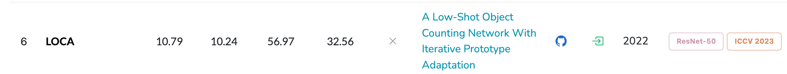

引用：
@InProceedings{Dukic_2023_ICCV,
author = {{\DJ}uki\'c, Nikola and Luke\v{z}i\v{c}, Alan and Zavrtanik, Vitjan and Kristan, Matej},
title = {A Low-Shot Object Counting Network With Iterative Prototype Adaptation},
booktitle = {Proceedings of the IEEE/CVF International Conference on Computer Vision (ICCV)},
month = {October},
year = {2023},
pages = {18872-18881}
}
arxiv日期：2023年9月28日
正式发表页面 ICCV2023
today 241117

标题：A Low-Shot Object Counting Network With Iterative Prototype Adaptation
小样本计数神经网络：迭代原型适应模块
❤️：丢失形状信息（size or aspect），因此本文提出了OPE（目标原型提取模块）来把形状信息进行迭代融合
本文做了什么事？
- 摘要
- 引入—贡献
- 结论
具体怎么实现：method
结果：Experiment
研究问题的动机：Introduction
研究现状：related work
摘要¶
We consider low-shot counting of arbitrary semantic categories in the image using only few annotated exemplars (few-shot) or no exemplars (no-shot). 采用小样本或者0样本 计数任意语义类别
The standard few-shot pipeline follows extraction of appearance queries from exemplars and matching them with image features to infer the object counts.
标准的小样本 遵循从样本中提取外观查询，并将其与图像特征进行匹配，以推断物体计数。
Existing methods extract queries by feature pooling which neglects the shape information (e.g., size and aspect) and leads to a reduced object localization accuracy and count estimates. 丢失了形状信息和定位信息、现有方法通过特征池化提取查询，忽略了形状信息(例如,大小和纵横比)，导致目标定位精度和计数估计值降低。
We propose a L ow-shot O bject C ounting network with iterative prototype A daptation (LOCA).
我们提出了一种具有迭代原型自适应( LOCA )的小样本物体计数网络。
Our main contribution is the new object prototype extraction module, which iteratively fuses the exemplar shape and appearance information with image features.
目标原型提取模块，迭代融合示例框形状和外观信息
我们的主要贡献是新的目标原型提取模块，该模块将样本形状和外观信息与图像特征进行迭代融合。
The module is easily adapted to zero-shot scenarios, enabling LOCA to cover the entire spectrum of low-shot counting problems. 该模块可以适用于0-shot场景，使得LOCA能够覆盖整个低样本计数问题。
LOCA outperforms all recent state-of-the-art methods on FSC147 benchmark by 20-30% in RMSE on one-shot and fewshot and achieves state-of-the-art on zero-shot scenarios, while demonstrating better generalization capabilities. The code and models are available.
引入-贡献 ¶
倒数第二段
（第一个贡献，提出LOCA）We propose a Low-shot Object Counting network with iterative prototype Adaptation (LOCA).
我们提出了一种具有迭代原型自适应( LOCA )的小样本物体计数网络。
（LOCA的主要贡献是OPE模块，OPE模块的突出特点）Our main contribution is the new object prototype extraction module, which separately extracts the exemplar shape and appearance queries. The shape queries are gradually adapted into object prototypes by considering the exemplar appearance as well as the appearance of non-annotated objects, obtaining excellent localization properties and leading to highly accurate counts (Figure 1).
- OPE模块，分别提取样例框形状和外观查询
- 形状特征 是逐渐的融合到 目标原型的。（通过考虑样例外观和非标注对象的外观） $\rightarrow $ 获得良好的定位属性，并得到高度准确的计数(图1 )。
（亮点：LOCA第一个使用样例框形状信息指导计数) To the best of our knowledge, LOCA is the first low-shot counting method that explicitly uses exemplars shape information for counting.
倒数第一段 （引入最后一段 结果段）指出本文所用数据集：
- FSC148数据集
- CARPK
结论¶
P1 第一点：提出了LOCA，分别考虑示例的形状特征和外观特征，并分别通过OPE模块进行迭代融合
因此，原型泛化到图像中的非标注对象，从而得到更好的定位性质和计数估计。
We presented a new low-shot counting method LOCA, that addresses the limitations of the current state-of-the-art methods. LOCA considers the exemplar shape and appearance properties separately and iteratively adapts these into object prototypes by a new object prototype extraction (OPE) module considering the image-wide features. The prototypes thus generalize to the non-annotated objects in the image, leading to better localization properties and count estimates.
P2 说明结果
P3 指出未来的研究方向
We envision several possible future research directions.
- Additional supervision levels such as introducing negative exemplar annotations could be introduced in LOCA for better specification of the selected object class. This could lead to interactive tools for accurate object counting.
为了更好地规范所选对象类，可以在LOCA中引入额外的监督级别，如引入负例注释。这可能导致用于精确物体计数的交互式工具。
- Furthermore, a gap between low-shot counters and object detectors could be further narrowed by enabling bounding box or segmentation mask prediction in LOCA to output additional statistics about the counted objects such as average size, etc., which is useful for many practical applications such as biomedical analysis.
此外，通过在LOCA中实现边界框或分割掩码预测，可以进一步缩小低样本计数器和目标检测器之间的差距，以输出关于计数对象的额外统计信息，例如平均大小等，这对于生物医学分析等许多实际应用是有用的。
引入¶
P1 特定物体计数；人群、汽车、物种；需要大量人工标注训练数据 → 小样本计数（由样例框标出目标）、0样本计数（计数多数类别）
Object counting considers estimation of the number of specific objects in the image. Solutions based on object detectors have been extensively explored for categories such as people [1, 33], cars [20, 12] or animal species [2, 32]. However, these methods require huge annotated training datasets and are not applicable to counting new, previously unobserved, classes with potentially only few annotations. The latter problem is explored by low-shot counting, which encompasses few-shot and zero-shot counting. Few-shot counters count all present objects of some class with only few of them annotated by bounding boxes (exemplars), while zero-shot counters consider counting the most frequent class without annotations.
P2 角度1：小样本计数&回归密度图；角度2：0-shot
-
Few-shot counters have recently gained momentum with the emergence of a challenging dataset [24] and follow a common pipeline [18, 24, 13, 26, 31]（小样本计数，随着数据集的出现）. Image and exemplar features are extracted into object prototypes, which are matched to the image by correlation.（图像和样例特征被提取到对象原型中，对象原型通过相关性与图像进行匹配。） Finally, the obtained intermediate image representation is regressed into a 2D object density map, whose values sum to the object count estimate.（最后，将得到的中间图像表示回归为2D物体密度图，将值相加得到目标计数的估计值） The methods primarily differ in the intermediate image representation construction method（这些方法的主要区别在于 中间图像表示的构建过程）（举例子说明）, which is based either on Siamese similarity [18, 24], cross-attention [16, 13] or feature and similarity fusion [26, 31].
-
While receiving much less attention, zero-shot counters follow a similar principle, but either identify possible exemplars by majority vote from region proposals [22] or implicitly by attention modules [11].虽然零样本计数器受到的关注较少，但遵循类似的原则，或者通过区域提案的多数投票来识别可能的样本[ 22 ]，或者通过注意力模块隐式地识别可能的样本[ 11 ]。
P3 引出本文要讨论的问题：
All few-shot counters construct object prototypes by pooling image features extracted from the exemplars into fixed-sized correlation filters. The prototypes thus fail to encode the object shape information (i.e., width, height and aspect), resulting in a reduced accuracy of the density map. Recent works have shown that this information loss can be partially addressed by complex architectures for learning a nonlinear similarity function [26]. Nevertheless, we argue that a much simpler counting architecture can be used instead, by explicitly addressing the exemplar shape and by applying an appropriate object prototype adaptation method.
structure
- 特定物体计数
- 小样本计数 & 回归密度图
- 引出问题：丢失形状信息，尽管现在也有研究方法在解决这个问题，但是结构比较复杂
-
- 贡献、结果
相关工作¶
约 2890 个字 2 张图片 预计阅读时间 10 分钟
P1 特定物体计数
Historically, object counting has been addressed by class-specific detectors for people [1, 33], cars [20, 12] and animals [2], but these methods do not cope well with extremely crowded scenes. In a jellyfish polyp counting scenario, [32] thus proposed to segment the image and interpret the segmentation as a collection of circular objects. Alternatively, [1, 6] framed counting as a regression of object density map, whose summation predicts the number of objects. A major drawback of these methods is that they require large annotated training datasets for each object class, which is often an unrealistic requirement.
P2 class-agnostic counters 类无关计数的发展
In response, class-agnostic counters have been explored, that specialize to the object category at test-time using only a few user-provided object exemplars.
文献概述
- An early representative [18] proposed a two-stream Generic Matching Network, that extracts the image and exemplar object features, concatenates them and regresses the representation into the final density map. 早期的代表[ 18 ]提出了一种双流的通用匹配网络，该网络提取图像和样本对象特征，并将它们串联起来，将表示回归到最终的密度图中。
- CFOCNet [30] noted that a mere concatenation leads to unreliable localization and proposed a Siamese correlation network(孪生匹配网) inspired by the tracking literature [3] to improve the localization and counts. CFOCNet [ 30 ]指出简单的级联会导致不可靠的定位，并受跟踪升的启发提出了孪生相关网络改进了定位和计数。
- Ranjan et al. [24] proposed a further improvement of correlation robustness by test-time Siamese backbone adaptation. Ranjan等人[ 24 ]提出了一种通过测试时孪生骨干网自适应来进一步提高相关鲁棒性的方法。
- Shi et al. [26] proposed an alternative approach for jointly learning the representation as well as a nonlinear similarity metric for improved localization and applied self-attention to reduce the within-class appearance variability in the test image. Shi等人[ 26 ]提出了一种联合学习表示的替代方法以及改进定位的非线性相似性度量，并应用自注意力来减少测试图像中的类内外观变异性。
- You et al. [31] combined the similarity map with the image features before applying location regression to improve count accuracy and proposed a learnable similarity metric to guide the fusion of exemplar and image features.You等[ 31 ]在应用位置回归之前将相似性图与图像特征结合以提高计数精度，并提出了一种可学习的相似性度量来指导示例和图像特征的融合。
- Liu et al. [16] adopted a vision transformer [7] for image feature extraction and a convolutional encoder to extract the exemplars. Cross-attention is used to fuse image and exemplar features and a convolutional decoder regresses the density map. Liu等[ 16 ]采用视觉转换器[ 7 ]进行图像特征提取，采用卷积编码器提取样本。交叉注意力用于融合图像和样本特征，卷积解码器对密度图进行回归。
- Recently, few-shot counting has been extended to few-shot detection [21] by adopting the transformer-based object detector [29] to predict also the object bounding box in addition to location.最近，小样本计数已经扩展到小样本检测[ 21 ]，采用基于Transformer的目标检测器[ 29 ]，除了位置外，还预测目标边界框。
P3 3-shot→ fewer shot
（这段文献综述的主题）While most works addressed situations with several (typically three) exemplars available, only few recent works considered reducing this number.
- Lin et al. [13] proposed a counting method that requires only a single exemplar. Their method is based on a transformer architecture and formulates correlation between image and exemplar features by several self- and cross-attention blocks.
Lin等人[ 13 ]提出了一种只需要单个样本的计数方法。他们的方法基于一种转换器结构，通过几个自注意力和交叉注意力块来建立图像和样本特征之间的相关性。
（极端情况 0-shot）An extreme case of zero-shot counting [22, 11] has been explored as well.
- Ranjan and Hoai [22] proposed RepRPN-Counter, which combines a region proposal network [25] that also predicts a repetition score of each proposal.Ranjan和Hoai
[ 22 ]提出了RepRPN - Counter，它结合了一个区域提案网络[ 25 ]，该网络也预测每个提案的重复评分。
- Proposals with the highest repetition scores are used as exemplars and sent through FamNet [24] to predict multiple density maps.
重复得分最高的提案作为示例，通过Fam Net [ 24 ]发送，预测多个密度图。
- On the other hand, Hobley and Prisacariu [11] developed a weakly supervised method that implicitly identifies object category most likely to be counted and predicts a density map for that category.
另一方面，Hobley和Prisacariu [ 11 ]发展了一种弱监督方法，它隐式地识别最有可能被计数的对象类别，并预测该类别的密度图。
- Vision transformer with a unsupervised training stage [16] has also shown success in zero-shot counting.
具有无监督训练阶段的视觉转换器[ 16 ]在零样本计数方面也取得了成功。
241118
todo：后面的方法